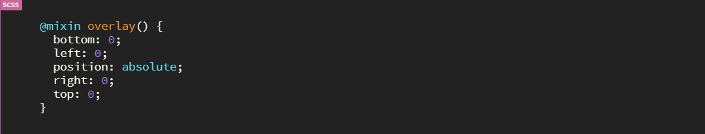
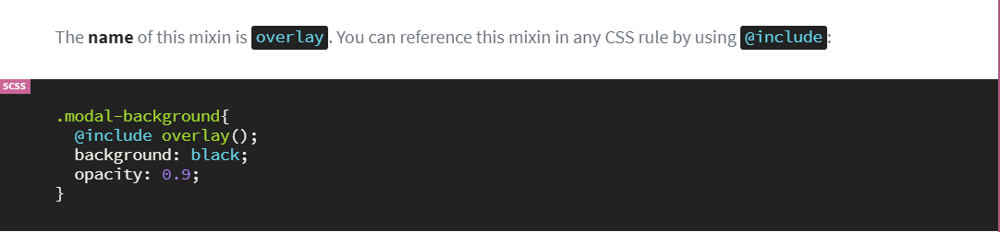
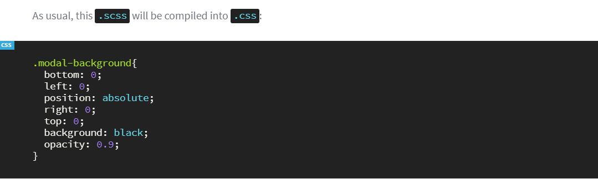
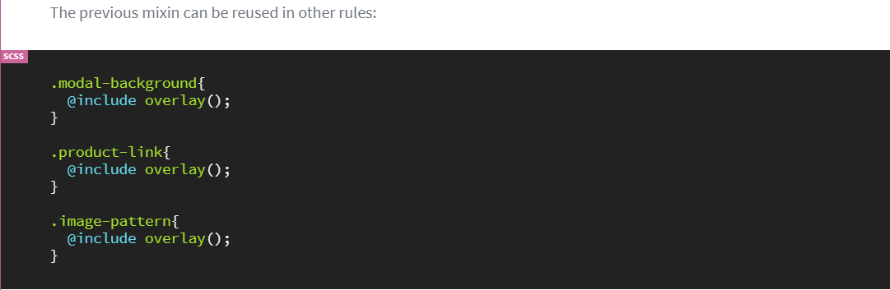
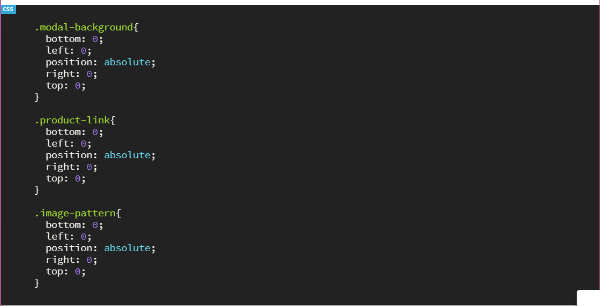

Mixin in SASS
In CSS development we are writing a some similar code multiple times like headings paragraphs image responsive code so for reducing this effort we can use Mixin functionlity from SASS. This is one kind of CSS function and this will be define only one time and you can call multiple times.
Remember how we wrote @keyframes when creating CSS animations? The Sass mixin syntax is fairly similar:



Reusability
The main purpose of creating Mixin is to => Reuse the same code whenever you need. It can reduce the development efforts and code quality can be improve.
Like Sass variables (where you define your values on a single location), Sass mixins allow you to define properties on a single location.


Parameters:
Because mixins are functions and because you might want to alter the output, mixins can accept parameters.